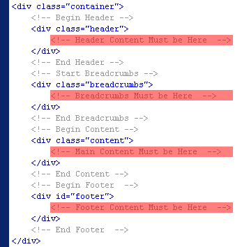
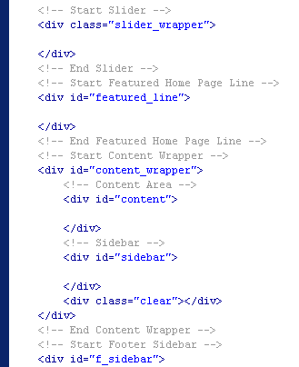
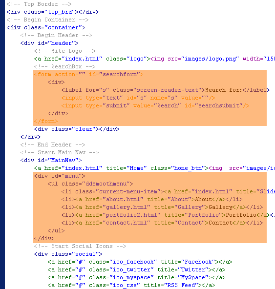

Created: 11/26/2010
By: Alex ThemeMakers
Email: thethememakers@gmail.com
Thank you for purchasing my theme. If you have any questions that are beyond the scope of this help file, please feel free to email via my user page contact form here. Thanks so much!
To imagine main html structure please see screenshot below:

This theme is a fixed layout with up to four columns on main page and on subpages. All of the information within the main content for page area is nested within a div with a class of "content". The sidebar for all the subpages content is within a div with a id of "sidebar". The main content for the subpages is within a id of "content". Here is the sample of general structure for all pages:

Here is the sample of general structure for all pages.

If you would like to edit the color, font, or style of any elements in these columns, you would do the following for selected theme in the css file "style.css":
a {
color: #someColor;
}
If you find that your new style is not overriding, it is most likely because of a specificity problem. Scroll down in your CSS file and make sure that there isn't a similar style that has more weight.
I.E.
.post a {
color: #someColor;
}
So, to ensure that your new styles are applied, make sure that they carry enough "weight" and that there isn't a style lower in the CSS file that is being applied after yours.
I'm using one CSS file in this theme called "style.css". This file contains some general styling, such as anchor tag colors, font-sizes, etc. Keep in mind, that these values might be overridden somewhere else in the file.
Each file is separated into sections using:
/* ############################################################## --- CONTENTS --- ############################################################## 1. RESET/GLOBAL Default Form Elements 2. GENERAL STRUCTURE Header Main Nav Area social menu Featured Line Content / Layout FOOTER 3. PAGES STYLES&LAYOUTS Fullwidth Page Layouts Portfolio Page Blog Page commentlist comment form Contact Page 404 Error Page 4. SIDEBARS Right Sidebar Right Coloured Sidebar Footer Sidebar 5. STYLED ELEMENTS SearchBox Breadcrumbs Pagination Styles for Buttons Ordered/Unordered Lists Recent Projects Three Featured Boxes Tabs Menu Table Layout */
If you would like to edit a specific section of the site, simply find the appropriate label in the CSS file, and then scroll down until you find the appropriate style that needs to be edited.
This Theme is Going with the 15 additional color variations, so we have additional 15 css files called by their color. For example blue color is named blue.css, red - red.css. The Files have only coloring styles for theme, and they have the same structure as the main css file, please see below what does it mean:
/* ############################################################## --- CONTENTS --- ############################################################## 1. RESET/GLOBAL Default Form Elements 2. GENERAL STRUCTURE home button menu Featured Line 3. PAGES STYLES&LAYOUTS Portfolio Page Blog Page commentlist 404 Error Page 4. SIDEBARS Right Coloured Sidebar Footer Sidebar 5. STYLED ELEMENTS Pagination Styles for Buttons Ordered/Unordered Lists Recent Projects Tabs Menu Table Layout */
This theme imports 18 Javascript files. You can see some help info, when click links which are below each regarding script:
I've included four sliced psds with this theme:
If you'd like to change the elements for pages, just open necessary psd file in Photoshop, make the adjustments, and then save slices in their format (i.e. .gif, .jpg, .png) into folder with images of this theme.(only chose 'File'->'Save For Web' option in Photoshop) Do the same for all .psd files if needed.
I've used the following images, icons and fonts as listed below.
Once again, thank you so much for purchasing this theme. As I said at the beginning, I'd be glad to help you if you have any questions relating to this theme. No guarantees, but I'll do my best to assist. If you have a more general question relating to the themes on ThemeForest, you might consider visiting the forums and asking your question in the "Item Discussion" section.
Alex ThemeMakers